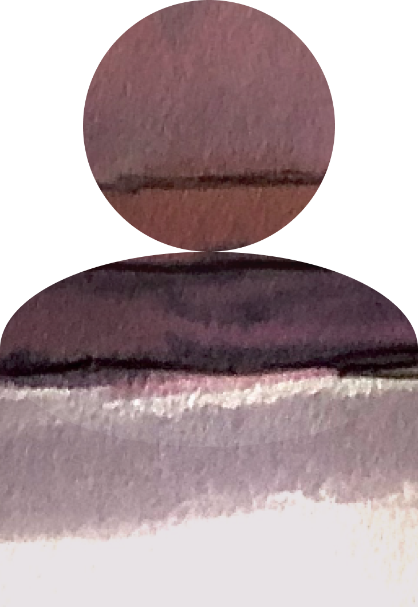

Context: The Atlanta Film Series is an annual showcase of four unique festivals. This film series offers an opportunity for creatives to showcase their work and for the community to experience their stories on screen. Our web redesign combined four desktop sites into a single responsive website.
My Role: UX Designer
My Team: Kate Williams (kjw00022@gmail.com), McKenzie Peterson (petersonmckenzie67@gmail.com) & Sayli Dhake (saylidhake@gmail.com)
Our research process was guided by insights gathered by a series of interviews with a former TIFF PR rep who has planned several festivals of comparative size to the Atlanta Film Series festivals. He cautioned the importance of being inclusive and sensitive towards several different groups of people, which was something we had to consider throughout our entire research and design process.
We also conducted a series of interviews with Atlanta residents who actively participated in local events. This was followed by two separate surveys. One targeted people who had a specific interest in attending film festivals for the first time. The other tageted people who had attended film festivals previously.
The three more poignant takeaways from our research process:
| Thinks/Feels I want to feel welcomed. I want to feel prepared. I need to be socially distant. I'm unhappy with virtual events. | Says/Does Seeks out unique experiences. Reads film synopsis Wears mask to outdoor events. Attends events to break routine. | ||
| Sees Event photos from years previous. Interesting trailers. |  | Hears The latest guidelines for Covid. Conversation about new film. | |
| Pains Crowded spaces make me nervous right now. Prices and access to art-house/independent film can be difficult. Difficult to plan for parking in the city. Hard to find activities that are safe. | Gains Smaller festivals mean a smaller crowd. Film series offers broad selection for a reasonable price. There is a MARTA stop and parking lot nearby. The event is outdoors and follows CDC guidelines. | ||
A point of debate among our team was around our user persona. We were worried something overly specific would be too limiting in our design process. The nature of the event is to feature film that shares a variety of perspectives and experiences, thus bringing together many groups of people. We ultimately created an empathy map to avoid this- pulling directly from interview and survey data to uncover what common experiences people had.
This helped us to define the user's experience via a storyboard.
We knew one of our biggest tasks would be taking on the information architecture and branding, as each festival was hosted on a separate site with its own navigation and styles. Users needed to be able to discover content that was relevant to them in a seamless way.
Using the “I like, I want, I wish “ method, we created a list of features we thought might be most useful in helping our users to:
We then sorted features into a prioritization matrix based on what we thought was most achievable in our timeframe and what we thought would have the greatest impact on the user.
Prototyping and testing occurred simultaneously. We were building out a new site map and navigation, so it was essential we received feedback on the overall information architecture from the very beginning.
We took a mobile first approach and A/B tested early wireframes of our new sitemap using two mobile navigation styles. Based on the results of early testing, we knew a responsive dropdown menu made the most sense.
We were also able to get clearer data about where people expected certain information to live on this website. This feedback was incorporated into the layout of each page.
In some of our early testing, issues users ran into came mostly around general confusion about whether these were four genres for a single film festival. If they purchased tickets, would they have access to each festivals? As a result, we felt mid-fi testing would be essential.
We wanted it to be clear that the Atlanta Film Series was a single organization, and the festivals were four separate events hosted by the organization. We thought introducing a styled UI components and imagery would help make this more obvious.
Our tests confirmed that the overall purpose of the site became clearer to the user, but we had some unexpected feedback on changes to be made to the overall style of the site. Particularly around the use of brand colors and accessibility. Some of these changes included:
Our final prototype was done in front-end development. Here is where the team learned a valuable less that